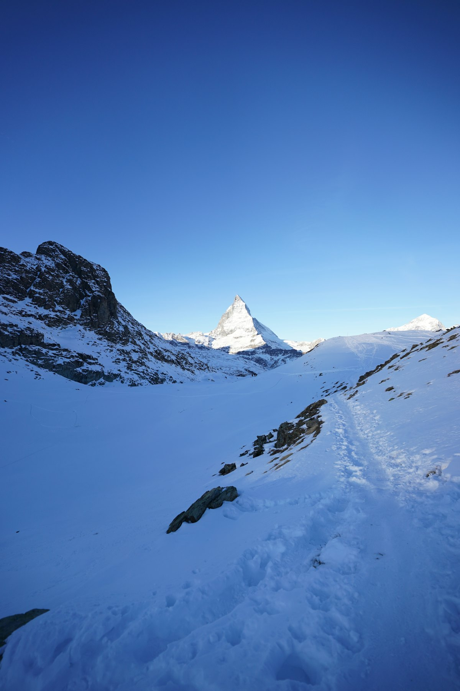
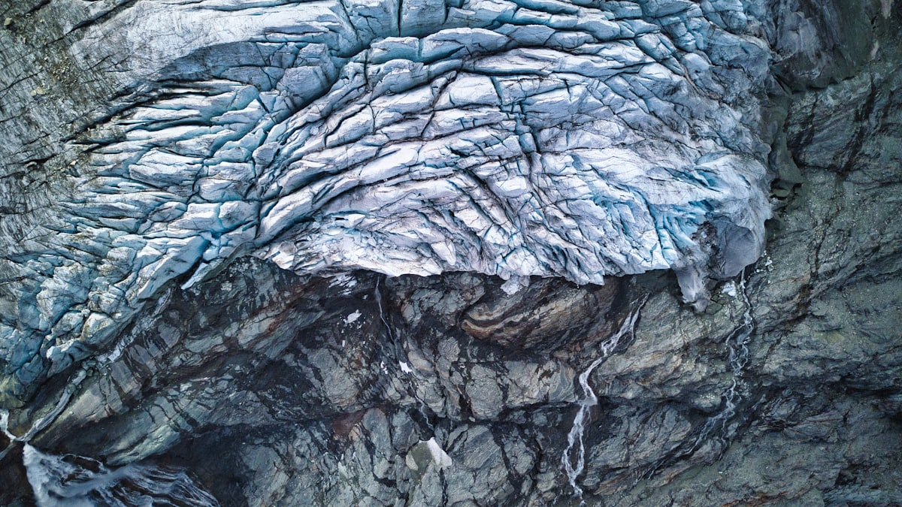
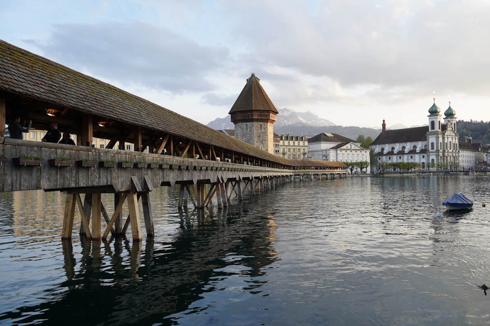
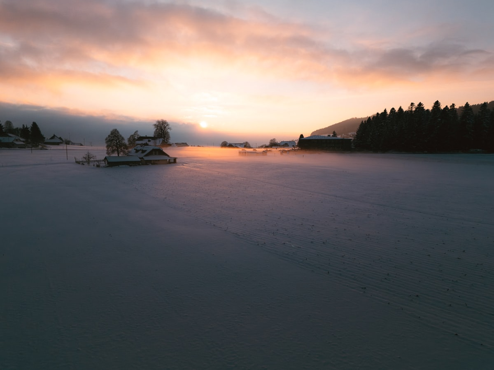
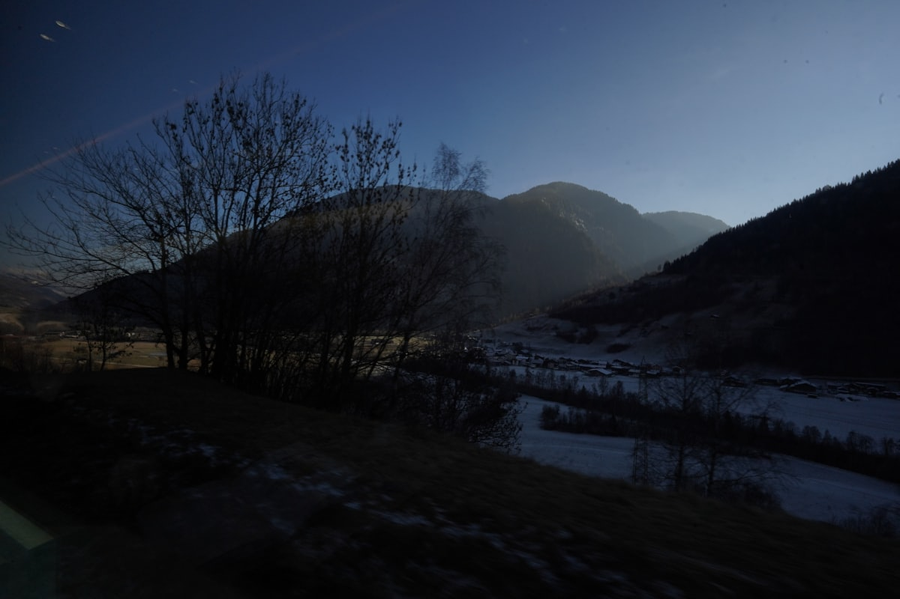
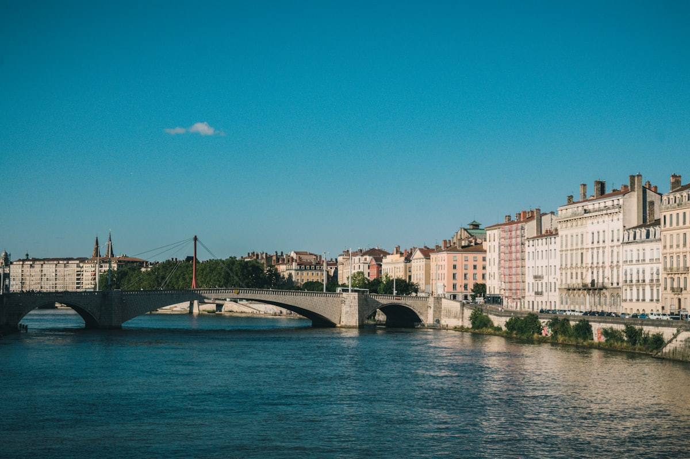
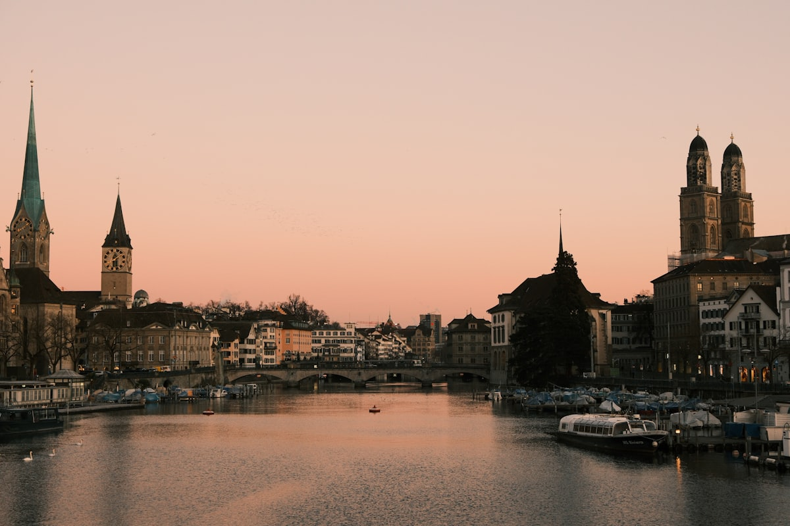
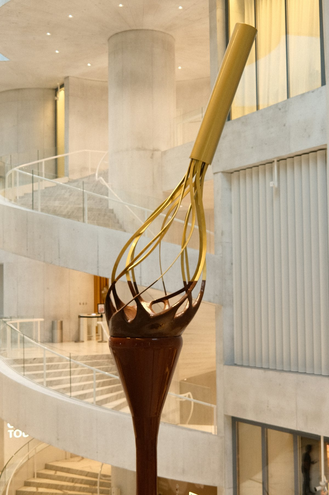

| 事项 | 结论 |
|---|---|
| 事项 | 结论 |
| 签证（最关键） | 中国护照必须办申根签证：成人 700 元 + 服务费 175 元，需通过 VFS Global 预约递交，旺季名额紧张，至少提前 2 个月准备材料 |
| 推荐方案 | 苏黎世 2 天 + 卢塞恩 3 天 + 因特拉肯/少女峰 3 天 + 采尔马特 2 天 + 日内瓦 2 天 |
| 返程约束 | 第 12 天从日内瓦返程（国航 CA862 直飞约 10h）；也可改从苏黎世回（班次更多） |
| 行程链 | 苏黎世 → 卢塞恩 → 因特拉肯 → 采尔马特 → 日内瓦（全程 SBB 火车） |
| 预算（人均） | 经济 15000–22000 ／ 标准 28000–40000 ／ 舒适 60000–85000（人民币，北京出发） |
| 三件提前事 | ① 预约办申根签证 ② 买瑞士通票（8 日二等 CHF 439）③ 少女峰/皮拉图斯旺季订位 |
| 季节提醒 | 6–9 月徒步与湖泊最美，12–3 月滑雪季；山顶全年积雪，天气多变，出发前看官方山顶摄像头 |
| 支付 | Visa/Master 信用卡 + 少量瑞郎现金（500–1000 瑞郎应急），多数地方支持 Apple Pay |
以下为 12 天 11 晚的推荐节奏：由北向南一条纵线，城市缓冲与山峰穿插。每日主景点 ≤2 个，全程以 SBB 国铁 + 瑞士通票衔接。
| 日期 | 行程 | 过夜地 | 主题 |
|---|---|---|---|
| D1 抵苏黎世 | 北京✈苏黎世（直飞约 10.5h），傍晚老城 + 利马特河散步 | 苏黎世 | 抵达+预热 |
| D2 | 苏黎世湖游船 → 班霍夫大街 → 美术馆/瑞士国家博物馆 | 苏黎世 | 都市湖光 |
| D3 | 转场卢塞恩：卡佩尔廊桥 → 狮子纪念碑 → 穆塞格城墙 | 卢塞恩 | 廊桥初见 |
| D4 | 瑞吉山一日（STP 免费）：齿轨登顶 1797m + 湖山全景 | 卢塞恩 | 山之日 |
| D5 | 皮拉图斯山金色环游：世界最陡齿轨 48% + 山顶滑梯 | 卢塞恩 | 环游日 |
| D6 | 转场因特拉肯：少女峰欧洲之巅（3454m）冰宫 + 观景台 | 因特拉肯 | 欧洲之巅 |
| D7 | 格林德瓦梦幻山坡 + 劳特布龙嫩瀑布小镇 | 因特拉肯 | 山谷日 |
| D8 | 布里恩茨湖 + 图恩湖游船 + 哈德昆观景台 | 因特拉肯 | 湖光日 |
| D9 | 转场采尔马特（无车村）：五湖步道 + 马特洪峰金山 | 采尔马特 | 雪山初见 |
| D10 | Gornergrat 观景台（3089m）+ 利菲尔湖马特洪峰倒影 | 采尔马特 | 登山火车日 |
| D11 | 转场日内瓦：大喷泉 → 花钟 → 老城圣彼得大教堂 | 日内瓦 | 湖城 |
| D12 返程 | 洛桑拉沃葡萄园徒步 → 日内瓦✈北京（夜航返京） | — | 葡萄园收尾 |
以下为 12 天全程的逐小时执行时间线，可当作「当天打开照着走」的清单。标注 ※ 的可选项视体力与天气取舍。
| 时间 | 事项 |
|---|---|
| 09:30–12:00 | 北京首都✈苏黎世（国航 CA781 直飞约 10h40min；或瑞航 LX197 约 10h20min），申根入境（需提前办好签证） |
| 12:30–14:00 | 机场 SBB 列车 10 分钟到苏黎世中央车站（Zürich HB），入住利马特河/老城附近酒店 |
| 14:30–17:00 | 苏黎世老城（免费）：尼德多夫街、圣彼得大教堂钟面（欧洲最大表盘）、苏黎世大教堂双塔 |
| 17:30–19:00 | 班霍夫大街（免费）：全球最贵购物街之一，只逛不买也养眼；苏黎世湖滨日落 |
| 19:30 | 晚餐：瑞士芝士火锅（Chäs-Fondue，人均 200–330 元）或苏黎世小牛肉，早睡倒时差（夏季 -6h） |
| 时间 | 事项 |
|---|---|
| 08:30–10:30 | 苏黎世湖游船（STP 免费）：湖区航线 1.5–2h，看湖岸别墅、葡萄园与阿尔卑斯远山 |
| 10:30–12:00 | 苏黎世美术馆（Kunsthaus，STP 免费）：莫奈、梵高与瑞士画家霍德勒作品 |
| 12:00–13:30 | 午餐：瑞士国民菜 Rösti 土豆饼配小牛肉，或湖岸三明治（超市 Coop 更便宜） |
| 14:00–17:00 | 林德霍夫山丘（免费）俯瞰老城 → 瑞士国家博物馆（STP 免费，瑞士历史与阿尔卑斯展） |
| 18:00 | 晚餐 + 苏黎世湖日落，利马特河夜游 |
| 时间 | 事项 |
|---|---|
| 08:30–09:30 | 苏黎世→卢塞恩（IC 直达约 45min，STP 全含），入住卢塞恩老城/湖畔 |
| 10:00–12:00 | 卡佩尔廊桥与八角水塔（免费）：欧洲现存最古老木桥，桥顶三角画可细看 |
| 12:00–13:30 | 午餐：卢塞恩老城瑞士餐厅（芝士火锅或湖鱼料理） |
| 14:00–16:30 | 狮子纪念碑（免费）→ 冰川博物馆（STP 免费）→ 穆塞格城墙登塔俯瞰卢塞恩 |
| 17:00–19:00 | 卢塞恩湖滨步行 + 罗伊斯河畔，湖边晚餐 |
| 时间 | 事项 |
|---|---|
| 07:30 | 卢塞恩码头乘船（STP 免费）→ 菲茨瑙 Vitznau（约 1h，顺带游卢塞恩湖） |
| 08:30–10:00 | 菲茨瑙乘齿轨火车登瑞吉库尔姆（Rigi Kulm，海拔 1797m）：欧洲最早齿轨铁路之一 |
| 10:00–12:00 | 山顶环线徒步：远眺阿尔卑斯群峰与卢塞恩湖、四森林州湖全景，天气好可见 13 座湖泊 |
| 12:00–13:30 | 山顶餐厅午餐（山景），瑞吉山脊步道 |
| 14:00–18:00 | 下山：缆车到韦吉斯 Weggis（湖岸小镇）漫步，乘船/火车返卢塞恩，傍晚湖边晚餐 |
| 时间 | 事项 |
|---|---|
| 08:00 | 卢塞恩码头乘船（STP 免费）→ 阿尔普纳赫施塔特 Alpnachstad（约 80min） |
| 09:30–11:00 | 世界最陡齿轨列车（坡度 48%）登皮拉图斯库尔姆（海拔 2128m） |
| 11:00–13:00 | 山顶观景台远眺卢塞恩湖 + 阿尔卑斯滑梯（Alpine Coaster，约 CHF 8）+ 山顶午餐 |
| 13:00–15:00 | 大缆车/吊舱下山到克里恩斯 Kriens，换巴士回卢塞恩（金色环游闭环） |
| 15:30–18:00 | 卢塞恩老城补漏：耶稣会教堂、穆塞格城墙远眺、湖边冰淇淋 |
| 时间 | 事项 |
|---|---|
| 07:30–09:30 | 卢塞恩→因特拉肯东（Luzern-Interlaken Express 约 1h50，STP 全含），入住因特拉肯 |
| 09:30–11:30 | 因特拉肯东乘伯尔尼高地铁路，经劳特布龙嫩/格林德瓦转少女峰登山齿轨（Jungfraubahn） |
| 11:30–14:30 | 少女峰站（海拔 3454m，欧洲最高火车站）：斯芬克斯观景台、冰宫、阿莱奇冰川全景 |
| 15:00–17:00 | 下山（去程回程可走不同线路），回因特拉肯 |
| 18:30 | 晚餐：因特拉肯湖景餐厅或瑞士火锅 |
| 时间 | 事项 |
|---|---|
| 08:30–09:30 | 因特拉肯→格林德瓦（Berner Oberland Bahn 约 35min） |
| 09:30–12:00 | 格林德瓦梦幻山坡（免费）：First 缆车（往返约 CHF 66，STP 折扣）或徒步 + 悬崖步道 Cliff Walk |
| 12:00–13:30 | 格林德瓦山景餐厅午餐 |
| 14:00–16:30 | 劳特布龙嫩瀑布小镇（免费）：72 条瀑布，施陶河瀑布（Staubbach）+ 特吕默尔巴赫冰瀑布（另购票） |
| 17:00–18:30 | 文根 Wengen 或米伦 Mürren 观景台俯瞰少女峰三联峰，返因特拉肯 |
| 时间 | 事项 |
|---|---|
| 08:30–10:30 | 布里恩茨湖游船（STP 免费）：湖水翡翠色，布里恩茨→伊瑟尔特瓦尔德段最出片 |
| 10:30–12:00 | 哈德昆观景台（Harder Kulm，缆车往返约 CHF 34，STP 不包）：俯瞰因特拉肯两湖与少女峰三联峰 |
| 12:00–13:30 | 因特拉肯午餐：Berner Platte 伯尔尼拼盘或湖边咖啡 |
| 14:00–16:00 | 图恩湖游船（STP 免费）到施皮茨 Spiez 城堡小镇（中世纪古堡 + 湖畔） |
| 16:30–18:30 | 回因特拉肯，何维克街（Höheweg）逛店，湖边晚餐 |
| 时间 | 事项 |
|---|---|
| 07:30–09:30 | 因特拉肯→采尔马特（经施皮茨/菲斯普转车约 2h20，STP 全含） |
| 09:30–10:30 | 入住采尔马特（无车村：禁燃油车，全靠电瓶车与步行），主街散步 |
| 10:30–12:30 | 五湖步道（5-Seenweg）起点 或 免费的马特洪峰观景点（Zermatt Matterhorn Viewpoint） |
| 12:30–14:00 | 午餐：采尔马特主街山景餐厅 |
| 14:30–18:30 | 马特洪峰博物馆（免费）或小镇自由漫步，黄昏教堂前拍马特洪峰金山，晚餐瓦莱州特色 Raclette 烤奶酪 |
| 时间 | 事项 |
|---|---|
| 07:30 | 采尔马特车站乘 Gornergrat 齿轨火车（夏季 5–10 月往返 CHF 132，STP/半价卡 5 折） |
| 08:30–10:30 | Gornergrat 观景台（海拔 3089m）：马特洪峰 + 戈尔纳冰川全景，欧洲海拔最高齿轨线路之一 |
| 10:30–12:30 | 中途罗滕博登 Rotenboden 下车，利菲尔湖（Riffelsee）拍马特洪峰倒影 |
| 12:30–14:00 | 罗滕博登或返回采尔马特午餐 |
| 14:30–18:30 | 下午自由：冰川天堂缆车（另购）或继续五湖步道，晚餐 + 采尔马特夜景，早睡次日南下 |
| 时间 | 事项 |
|---|---|
| 07:30–11:00 | 采尔马特→日内瓦（经菲斯普，约 3h35，STP 全含，途经洛桑） |
| 11:00–12:00 | 入住日内瓦湖岸，中午老城午餐 |
| 13:00–15:30 | 大喷泉（Jet d'Eau）（免费）：140m 高喷泉 + 花钟 + 日内瓦湖岸漫步 |
| 16:00–18:00 | 老城圣彼得大教堂（登塔俯瞰全城）→ 卢梭岛 → 旧城墙公园 |
| 18:30 | 晚餐：日内瓦湖鲜/法式融合菜，湖畔夜景 |
| 时间 | 事项 |
|---|---|
| 07:30–08:30 | 日内瓦→洛桑（IC 约 40min，STP 全含） |
| 08:30–11:00 | 洛桑拉沃（Lavaux）梯田葡萄园徒步（免费，世界遗产）：谢布尔村到圣萨福兰，湖山酒香 |
| 11:00–12:30 | 葡萄园观景午餐（配当地白葡萄酒 Chasselas） |
| 13:00–17:00 | 洛桑奥林匹克博物馆（可选，约 CHF 20）或直接回日内瓦；去机场办退税（购物满 300 瑞郎） |
| 18:30–20:30 | 日内瓦✈北京（国航 CA862 直飞约 10h，夜航次日抵达），到家 |
必去（必去）/ 顺路（顺路）/ 可跳过（可跳过）。

必去
必去
必去
必去
必去
必去
顺路图片为 Unsplash 主题图（马特洪峰、少女峰冰川、卢塞恩卡佩尔桥、因特拉肯湖区、日内瓦湖、苏黎世老城等均为瑞士实景），用于页面配图。更多免费景点：苏黎世湖滨、狮子纪念碑、穆塞格城墙、劳特布龙嫩瀑布、拉沃葡萄园。
点击左侧节点可在地图上定位；点击地图 marker 会高亮对应节点。坐标为 WGS-84 转 GCJ-02 纠偏后标注。
以下为单人、不含购物的估算，人民币计价；出发地基准北京。汇率按 1 瑞士法郎 ≈ 8.2 元人民币估算。瑞士是全球最贵目的地之一，餐饮住宿交通均比欧洲邻国贵一档。往返机票按淡季直飞 8000–10000 元计，转机可省 2000–3000 元。
| 项目 | 经济（15000–22000） | 标准（28000–40000） | 舒适（60000–85000） |
|---|---|---|---|
| 往返机票 | 北京⇄苏黎世/日内瓦 转机 4500–6000 | 直飞往返 8000–10000 | 直飞商务/灵活 18000–22000 |
| 住宿（11 晚） | 青旅/民宿 350–600/晚 | 三星酒店 800–1300/晚 | 四五星/山景酒店 2200–3500/晚 |
| 交通（通票+山峰） | STP 8 日 + 山峰折后 4500–6000 | STP 8 日 + 山峰折后 5500–7500 | 头等舱 + 冰川天堂/滑翔伞 10000–13000 |
| 门票/体验 | 免费景点为主 800–1500 | 少女峰+马特洪峰+瑞吉等 3000–4000 | 全含 + 体验项目 5000–7000 |
| 餐饮（12 天） | 超市+简餐 3000–4000 | 正常餐厅 6000–8000 | 米其林/奶酪火锅大餐 10000–15000 |
北京✈苏黎世 → 苏黎世 1 天 → 卢塞恩 1 天（卡佩尔桥+瑞吉山）→ 因特拉肯 2 天（少女峰+格林德瓦）→ 采尔马特 2 天（Gornergrat）→ 日内瓦 1 天 → 返程。砍掉皮拉图斯、洛桑拉沃与第二座湖，节奏更快，人均预算可压 20%–30%。
带娃推荐：卢塞恩（瑞吉山齿轨 + 瑞士交通博物馆）+ 因特拉肯（少女峰冰宫 + First 缆车 + 劳特布龙嫩瀑布）为主，砍掉采尔马特多日停留改一日往返；瑞士 6 岁以下儿童多数交通免费，父母持瑞士家庭卡随行儿童山峰票免费。注意山顶体感 -5°C，给孩子备好抓绒 + 防风外套。
把采尔马特扩为 4–5 天滑雪（马特洪峰滑雪区全季保证雪况），加格林德瓦-翁根滑雪场；日内瓦砍为 1 天。冬季机票酒店整体便宜 20%，但务必提前订雪具与雪票（成人日票约 90–120 瑞郎），并备防滑鞋与墨镜。2 月采尔马特有马特洪峰日落金山与雪地活动。
| 方式 | 时长 | 参考价 | 备注 |
|---|---|---|---|
| 直飞（推荐） | 北京→苏黎世约 10.5h / 日内瓦约 10h50 | 往返 8000–12000 元 | 国航 CA781（苏黎世）、CA861（日内瓦），每周多班 |
| 转机 | 13–18h | 5000–8000 元 | 经莫斯科/迪拜/多哈/香港，便宜但费时，注意过境签证 |
| 境内衔接 | 苏黎世→卢塞恩 45min、卢塞恩→因特拉肯 1h50、因特拉肯→采尔马特 2h20、采尔马特→日内瓦 3h35 | 瑞士通票全含 | SBB 国铁 + 私铁，站站准时，不查票是常态但查到必罚 |
| 区域 | 价格/晚 | 优点 | 短板 |
|---|---|---|---|
| 苏黎世·中央车站/老城 | 经济 500–800 / 标准 1000–1600 | 机场直达，景点步行可达 | 全瑞士最贵之一 |
| 卢塞恩·老城/湖畔 | 经济 450–700 / 标准 900–1400 | 廊桥与码头步行 | 夏季湖边房紧俏 |
| 因特拉肯·东站/何维克街 | 经济 400–650 / 标准 800–1300 | 去少女峰/格林德瓦枢纽 | 旺季游客多 |
| 格林德瓦/劳特布龙嫩 | 山景酒店 1200–2500（含早） | 推窗见山、梦幻山坡 | 一房难求，提前 2 个月订 |
| 采尔马特·主街/车站 | 经济 700–1000 / 标准 1300–2200 | 马特洪峰景观，无车村安静 | 全瑞士住宿最贵一档 |
| 日内瓦·湖岸/老城 | 经济 500–800 / 标准 1000–1500 | 国际都市、机场便捷 | 展会期房价翻倍 |